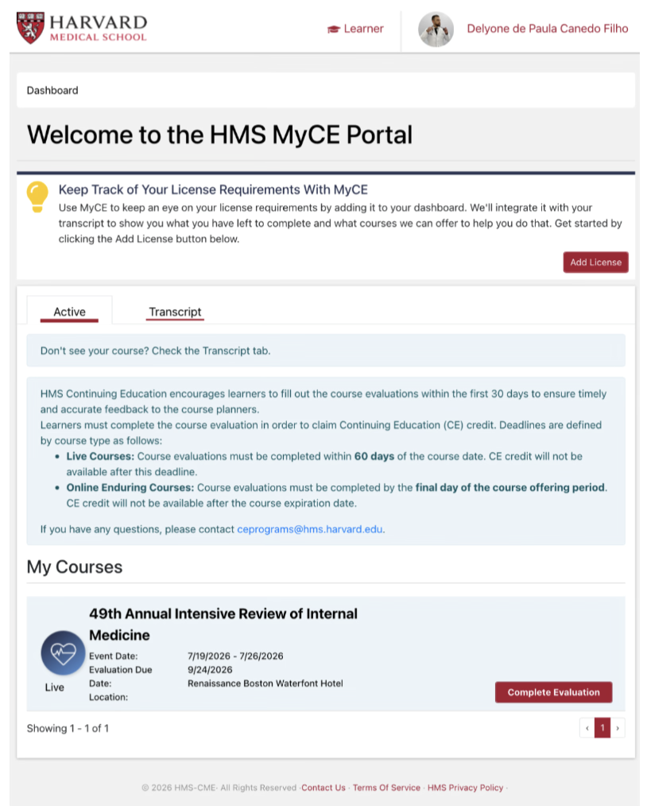
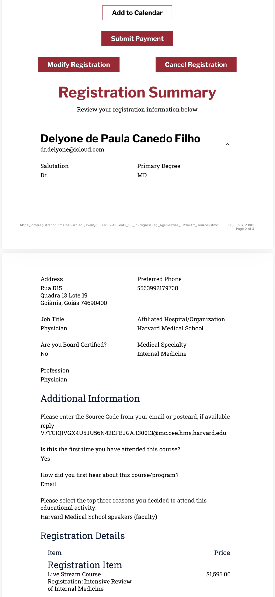

Currículo Lattes
Currículo do Sistema de Currículos Lattes de Delyone de Paula Canedo Filho.
Abrir PDF →Documentos curriculares reunidos no acervo do fundador. A leitura institucional é complementar; os arquivos originais permanecem disponíveis.
Currículo do Sistema de Currículos Lattes de Delyone de Paula Canedo Filho.
Abrir PDF →Documento curricular adicional presente no acervo Founder.
Abrir PDF →
